Home
Hi! Thanks for playing Downfall, and for clicking on this. We're glad you enjoyed this project. The Steam release of Downfall doesn't support other mods, but this guide will help you get set up to play it and any other mods you desire in your base Slay the Spire game. There is no difference between Downfall's Steam version and the Workshop version, except for additional configuration options.
Getting Started
First, head to your Steam Library and click on Slay the Spire. Then, click the Workshop link.
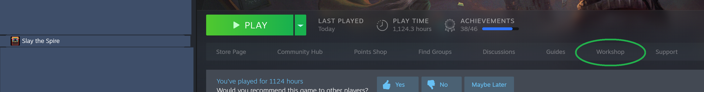
Next, search for 'downfall expansion' in the mod search bar.
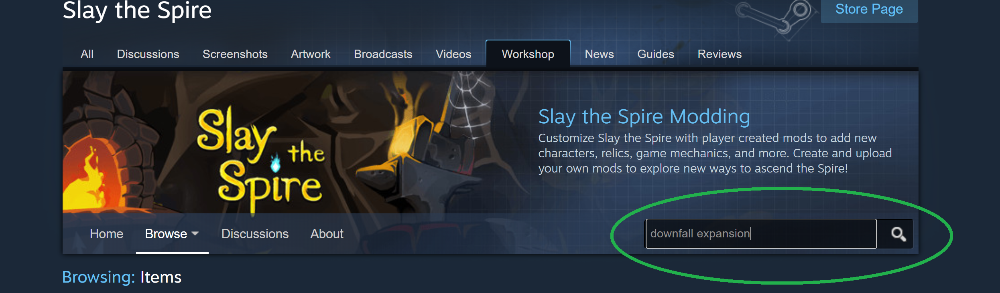
Click on the 'Downfall Expansion Mod' link.
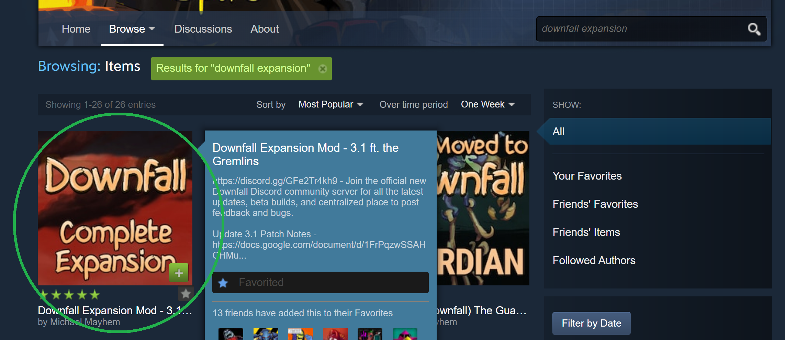
Subscribing to mods
Within the Workshop page for Downfall, click on Subscribe. "Subscribe" is the Workshop's term for 'download and install, and keep this mod updated until I Unsubscribe."
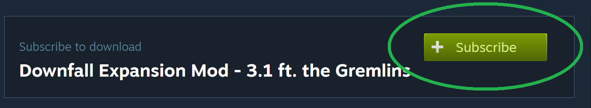
This will bring up a list of prerequisite mods that also need to be Subscribed to. Start by clicking the first one, ModTheSpire.
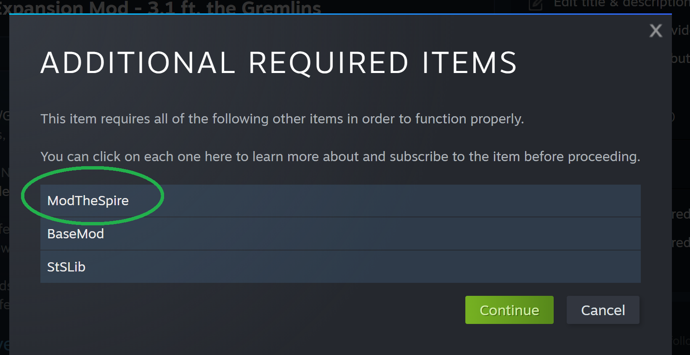
In the new window for ModTheSpire, click on Subscribe. Then, close the additional window to go back to Downfall's page.
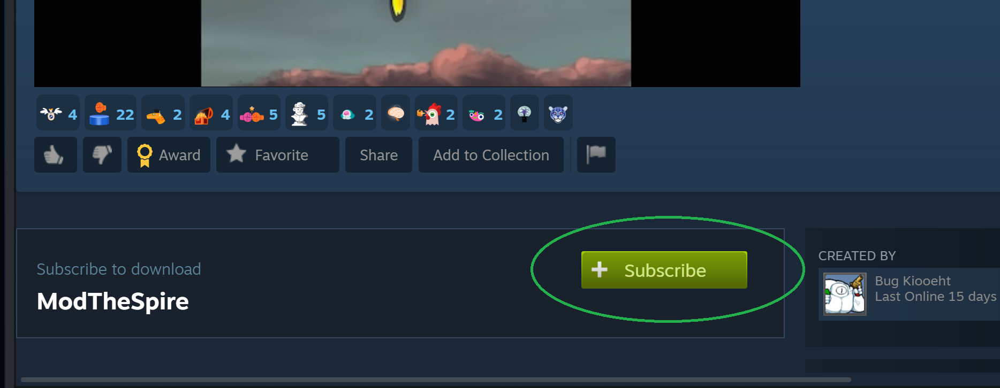
Repeat this process for BaseMod and STSLib. Click each one, and then click Subscribe within their new windows.
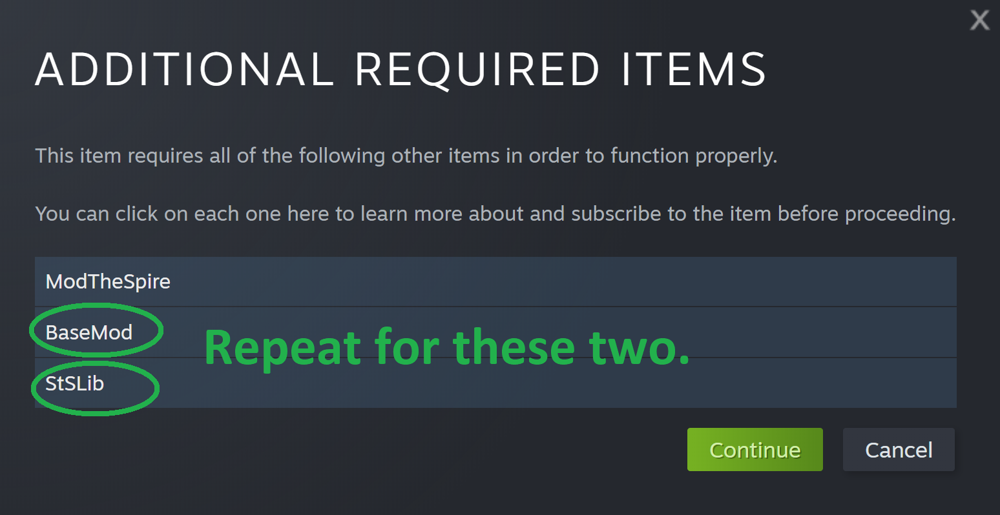
When all three have been Subscribed, click Continue. Downfall will now be Subscribed.
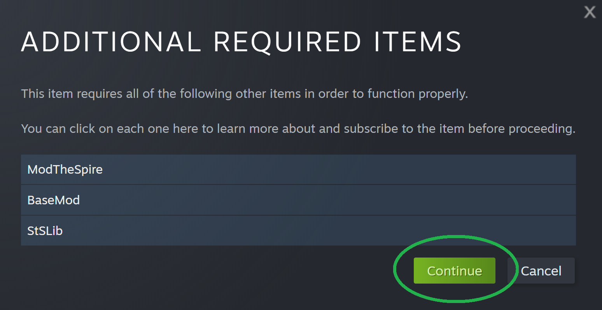
Playing Modded
To launch the game using Mods, go to your Steam Library, click on Slay the Spire, then click the Play button. NOTE: Activating Slay the Spire through a desktop shortcut will not allow you to play modded, it must be launched using Steam's library in some fashion.
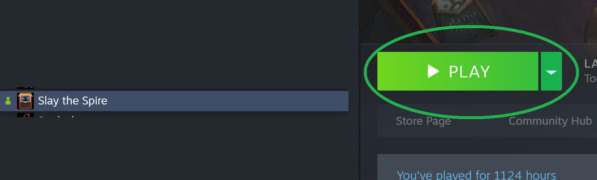">
In the popup window, click the 'Play with Mods' bubble, then click Play.
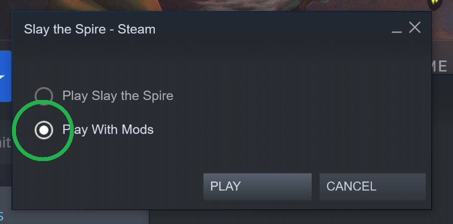">
This new window is the Slay the Spire Mod Launcher, known as ModTheSpire or MTS for short. In this window, click the checkbox for each of the three mods you have Subscribed to - BaseMod, STSLib, and Downfall. Checking a box indicates you wish to launch Slay the Spire with a particular mod enabled. With all three checked, click the Play button.
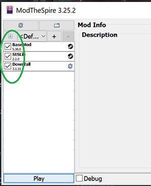
That's it! Slay the Spire should now be launching with Downfall enabled.